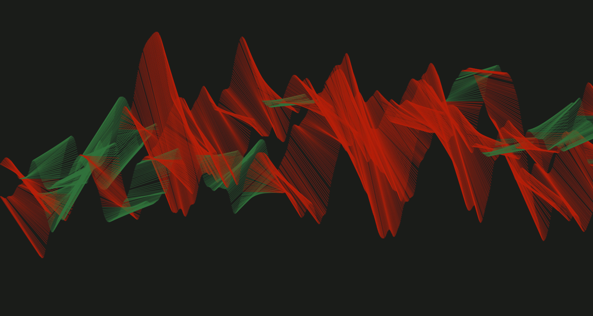

This is a list of sketches I'm creating while learning and exploring Processing.
All the codes which generated these sketches are available at this git repo.
You can find more info about myself and other stuffs I produce at berinfontes.com.
Python code here
Experimenting on line deformations/rotations - 005
Python code here
Study of polygon deformations on random polygons - 003
Python code here
Experimenting on motions - 002
Python code here
Controlling random distributions - 003
Python code here
Controlling random distributions - 002
Python code here
Experimenting on motions - 001
Python code here
Controlling random distributions - 001
Python code here
Experimenting on line deformations/rotations - 004
Python code here
Experimenting on line deformations/rotations - 003
Python code here
Experimenting on line deformations/rotations - 002
Python code here
Experimenting on line deformations/rotations - 001
Python code here
Naive approach on a triangle's space-filling implementation
Python code here
Splitting a triangle internally
Python code here
Visualization 002 on Bokeh Effect's movement
Python code here
Visualization 001 on Bokeh Effect's movement
Python code here
Studying bokeh effect with @lucianoratamero.
Python code here
Study of polygon deformations on random polygons - 002
Python code here
Study of polygon deformations on random polygons - 001
Python code here
Study of polygon deformations 001
Python code here
Study of multiple patterns - 001
Python code here
Lines on 2 noise functions
Python code here
Study of symmetry - 005
Python code here
Simple Random Walker I've created during my Grupy-SP Meetup's presentation.
Python code here
Study of symmetry - 004
Python code here
Study of symmetry - 003
Python code here
Simple noise example for Noite de Processing's form
Python code here
Study of symmetry - 002
Python code here
Study of symmetry - 001
Python code here
A random walker using triangles with a glitch when the new vertex transpasses the window size.
Python code here
Random composition on The Wall
Python code here
Random triangles composition 002.
Python code here
Random triangles' composition as a variation of #043.
Python code here
Studying lerp function to create a random self-portrait
Python code here
Visualizations created during PythonBrasil[14] using QR code in the participants' badges as random seed.
Python code here
Glitching image using 3D noise
Python code here
Controlling random distributions with Fibonacci's numbers
Python code here
Random arcs' composition inspired by Athos Bulcão's work.
Python code here
Experimenting on vector fields
Python code here
Random grid walkers with some alpha transparency
Python code here
Comparing randomic y values with noise y values
Python code here
Creating and studying gradients by varying noise's x, y and z scale
Python code here
Variation of a Floyd-Steinberg dithering implementation proposed by Daniel Shiffman's coding challenge.
Python code here
Adaptation of @villares' grid function combined with s_035
Python code here
First experimentation with @villares' grid function
Python code here
Random line space filling 2 - using greatest line segment with color logic
Python code here
Practicing with imagens and texts because I don't want a fascist government in Brazil
Python code here
Random line space filling 1 - using smallest line segment
Python code here
Random compositions on 4 sin curves.
Python code here
Some randomness on polar equations.
Python code here
Gaussian distribution on random radius' arcs.
Python code here
Training with lines, movement and pure randomness.
Python code here
Experimenting polar equations inspired by Experiment in Montion Graphics video.
Python code here
Training with circles #001.
Python Code and individual images here
Training with rectangles #001.
Python Code here
Training with triangles #002.
Python Code here
Fractal tree for Subita's logo.
Python Code here
Training with triangles #001.
GIF demo here / Python code here
Learning how to plot an hexagonal grid.
Video demo here / Python code here
Fixed pulse lines to work with #015 visualization.
Python code and individual images here
Study of color palettes using PVector
Video demo here / Python code here
Studying PVectors with velocity and acceleration.
Video demo here / Python code here
Glitched pulse lines on 4 Hilbert's Curves.
Video demo here / Python code here
Further explorations on rotation and starting to play with arcs and HSB color mode.
GIF demo here / Python code here
When trying to add pulse lines to #015, I ran into a very coll bug.
Added some craziness using rotations and colors randomization.
Python code here
Studying fractals by drawing Hilbert's Curves up to 5 iterations.
Python code here
Further studies on maze builders.
Python code here
Studying curveVertex.
Python code here
Evolution of #010 but changing how to get the cell's neighbors.
Python code here
Evolution of #010 but changing how to get the cell's neighbors.
Python code here
Evolution of #009 but adding colors and limiting the "wall" length.
Python code here
Study and variaton of a recursive backtracker algorithm implemented at Noites de Processing meetup.
GIF demo here / Python code here
Combining Perlin Noise with a customization of Conway's Game of Life
GIF demo here / Python code here
Evolution of #006 by adding lines and positioning logic.
GIF demo here / Python code here
Experiment to create WaveNoise class.
Java code here
Combination of #003 and #004 to satisfy Moisés' wish.
* Couldn't generate a gif because it takes 1 minute to finish =]Java code here
Variation of #003.
* Couldn't generate a gif because it takes 1 minute to finish =]Java code here
Study to simulate clockwise motion using translation and rotation
* Couldn't generate a gif because it takes 1 minute to finish =]GIF demo here / Python code here
Wave propagation with simple concepts of matrix algebra and analytical geometry.
------------------------------------------------------------------------------------------
GIF demo here / Java code here
Experiment to understand quadrant positioning and noise function